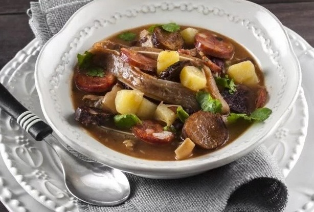

Sopa da Pedra

Stone soup is a typical Portuguese soup, particularly from the city of Almeirim.
Doses: 8 persons | Preparation Time: 1h | Cooking Time: 1 min | Total Time: 1h1 min
Ingredients
- 1 pig's ear
- 1 black sausage (blood sausage, preferably regional)
- 1 meat sausage
- 150 g streaky bacon
- 1 l of red beans
- 750 g potatoes
- 2 onions
- 2 cloves of garlic
- 1 bunch of coriander
- 1 bay leaf
- Salt and pepper to taste
Steps
- If the beans are from the same year, they do not need to be soaked.If it is tough, soak it for a few hours.Scald the pig's ear in boiling water and then scrape it off.
- Boil the beans in plenty of water, along with the ear, chorizos, lard, onions and peeled garlic, bay leaf, salt, and pepper.If necessary, add more boiling water.
- Remove the meat when it is cooked and add the peeled and diced potatoes and chopped coriander to the pot.
- When the potatoes are cooked, add the meat previously cut into pieces again, as well as a well-washed stone.Mix everything together and serve immediately.
Return